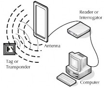

Los cuatro ejes «WMS, SCM, CRM y ERP» para la e-logística
The four axes ‘WMS, SCM, CRM and ERP’ for e-logistics
Melani Zucco Monti1; Franklin Gómez Samaniego1; Rita Carrera González1; Carlos Alveo Lorenzo1 & Miguel Vargas-Lombardo2*
1Facultad de Ingeniería Industrial – Centro Regional de Coclé – Universidad Tecnológica de Panamá
2Director del Grupo de Investigación en Salud Electrónica y Supercomputación – GISES – Centro Regional de Coclé – Universidad Tecnológica de Panamá
Resumen A través de los años, la logística ha sufrido importantes transformaciones no solo en términos conceptuales sino, se ha comprobado cómo ha evolucionado a lo que conocemos hoy día como e-logística, con lo cual se incorpora la utilización de una herramienta fundamental como lo es el internet. Debido a este avance, las organizaciones han determinado un cambio en su manejo de inventarios, almacenes y cadena de suministro. Dando esto como resultado las implementaciones de ciertos sistemas de apoyo como WMS, SCM, ERP y CRM. En este artículo se muestran algunos de los software más utilizados en la e-logística, además se describe un caso de estudio exitoso en la implementación de ERP, esta es en la empresa Telcon, la cual decidió realizar cambios en su estructura implementando sistemas de apoyo adaptables a sus necesidades, dando como resultado mejor desempeño en las actividades de almacenaje y distribución.
Palabras claves e-logística; Administración de Almacenes; Administración de la Cadena de Suministro; Administración de la relación con los Clientes; Planificación de Recursos Empresariales.
Abstract Over the years, logistics have undergone important changes not only in conceptual terms, but has proven how it has evolved to what we know today as e-logistics, in which the use of Internet as a key tool is incorporated. Due to this development, organizations have determined a change in inventory management, warehouse and supply chain. These changes lead to new implementations of certain support systems such as WMS, SCM, ERP and CRM. This article describes some commonly ERP software used in e-logistics. In addition a successful case of ERP implementation is described, this is the company Telcon, which decided to make the changes in its structure by implementing adaptive systems to support their needs, resulting in better performance in warehousing and distribution activities.
Keywords e-logistic; Warehouse Management; Supply Chain Management; Customer Relationship Management; Enterprise Resource Planning.
Introducción
El crecimiento de las empresas e industrias junto con el desarrollo de nuevas herramientas tecnológicas, está revolucionando la forma en que se desenvuelve la sociedad, a tal punto que modifican las relaciones de tipo económico y empresarial. El estado del arte desarrollado expone una evaluación, análisis de la logística y el avance que ha experimentado con el paso de los años.
Tal es el caso que el creciente uso de las tecnologías, como el internet, ha convertido la logística en e-logística. Sobre las bases de las ideas expuestas se ha estructurado el documento de la siguiente manera: la sección 2 presenta el estado del arte de la e-logística, seguidamente se aborda la sección 3, la cual trata sobre la e-logística y los sistemas claves.
Se continúa con la sección 4 la cual desarrolla el tema de software de e-logística, posteriormente se presenta un caso de estudio que es un análisis de implantación de un ERP para la empresa Telcon. Finalmente se presentaran las conclusiones y trabajos futuros.
2. E-Logística y el sistema de administración de almacenes - WMS
De acuerdo a [1], el Warehouse Management System o Sistema de Administración de Almacenes, se define como: “la herramienta informática más importante en la administración de almacenes, mediantelacobertura de múltiples actividades propias de los almacenes”. De la misma forma [2], define el WMS como: “la base de datos conducida mediante una aplicación en la computadora, para impulsar la eficiencia de almacén dirigiendo y controlando el inventario físico mediante el registro de las transacciones del almacén. Este sistema también dirige y optimiza el inventario basado en información de tiempo real”. Se define entonces que el WMS es la gestión y optimización mediante el uso de aplicaciones de computadora para el inventario y el almacén, así como los factores más importantes que se deben considerar para la administración eficiente del mismo.
Para [3] la gestión de almacenes es un proceso crucial “que busca regular los flujos entre la oferta y la demanda, optimizar los costos de distribución y satisfacer los requerimientos de ciertos procesos productivos”. De la misma manera [4] plantea que el conocimiento de la gestión de almacenes es necesario para el control de recursos y capacidad del almacén dependiendo de su diseño y cantidad de mercancía que reposará dentro de las instalaciones que satisfaga la demanda de los clientes y el recibo de proveedores.
Como respaldo a lo anteriormente expuesto, según [1], el avance de la e-logística ha permitido el desarrollo de nuevas tecnologías, herramientas y sistemas que dan soporte al WHM. A continuación se describen dos herramientas más utilizadas, sin embargo, no son las únicas en el mercado:
-Código de Barras, de acuerdo a [5], son sistemas de codificación que permiten identificar de manera inequívoca un producto, mediante la colocación de una etiqueta con una serie de números lo que a su vez permite la simplificación de los procesos y mejor control de la mercancía mediante el uso de lectores especiales en el almacén.
-Radiofrecuencia, según [5] y [6], es una herramienta que permite identificar por medio de una antena el tipo y cantidad de producto que ingresa al almacén de forma automática. Esto se debe a que los productos poseen un microchip lo que le permite ser identificado. A continuación en la figura 1 se muestra el funcionamiento de esta herramienta.

Figura 1. Identificador de Radiofrecuencia. (http://www.epc-rfid.info/rfid).
Una vez definidos estos dos factores es necesario medir y controlar la salida de mercancía que los clientes necesitan. Este proceso en los últimos años es llevado desde sistemas digitales que permiten generar informes detallados. Es por esto que la cadena de suministro también forma parte relacionada con la e-logística. A continuación se explica la relación entre estas.
3. E-Logística y la administración de la cadena de suministro - SCM
De acuerdo a [6], la práctica de la gestión de la cadena de suministro es guiada por algún concepto básico subyacente que no han cambiado mucho a lo largo de los siglos. Estas son algunas de las definiciones de una cadena de suministro:
"Una cadena de suministro es la alineación de las empresas que traen productos o servicios necesarios para el mercado".[7].
"Una cadena de suministro consta de todas las etapas implicadas, directa o indirectamente, en cumplimiento de una petición del cliente. La cadena de suministro no solo incluye los fabricantes y proveedores, sino también los transportistas, almacenes, minoristas, y los propios clientes". [6].
"La coordinación sistémica y estratégica de las funciones tradicionales de negocios y las tácticas a través de estos negocios dentro de la cadena de suministro, a los efectos de mejorar el rendimiento a largo plazo de las empresas individuales y de la cadena de suministro en su conjunto" [8].
En [9] la SCM, se refiere a las herramientas y métodos cuyo propósito es mejorar y automatizar el suministro a través de la reducción de las existencias y los plazos de entrega. Las herramientas SCM se basan en información sobre la capacidad de producción que se encuentra en el sistema de información de la empresa para hacer pedidos automáticamente. Por eso, las herramientas SCM tienen una fuerte correlación con la gestión integral de la empresa. En teoría, una herramienta SCM permite rastrear el paso de las piezas (rastreabilidad) entre los distintos participantes de la cadena de suministro.
También en [10], se define a la SCM, como la administración y mando de todos los materiales, fondos e información relacionada en el proceso de la logística, desde la adquisición de materias primas a la entrega de productos acabados al usuario final.
Por lo tanto en [11], SCM incluye vendedores, instalaciones de manufactura, proveedores de logística, centros de distribución interna, distribuidores, mayoristas y otras entidades que conducen al usuario final. Existe diferencia entre la SCM y logística, puesto que la logística se encarga de la gestión de los productos físicos, de los servicios, del flujo financiero y la información correspondiente a través de la organización, desde el proveedor hasta el cliente final o consumidor, mientras que la SCM comprende el manejo de los procesos de la cadena de valor del negocio, desde el punto de abastecimiento, al punto de consumo. Luego, la primera hace parte integrante de la segunda. La SCM, abarca la reingeniería de los procesos de la cadena de valor de las organizaciones, con el objetivo de garantizar un flujo constante tanto de materiales y servicios, como de la información respectiva.
En [12], se establece que, en una red logística, el traslado de información juega un papel tan importante como el traslado de productos. Sin un sistema de información que haga un traslado eficiente de la información entre las organizaciones de la red logística, hace que el traslado de los productos resulte sin duda más costoso, más complicado y más lento. El internet facilita a las empresas una plataforma común que permite la integración fácil y accesible de los sistemas de información de las distintas empresas. El impacto que tiene el internet en la red logística de distintas organizaciones no es solo a nivel del área de compras, es una herramienta ideal para alcanzar la integración entre empresas con el objetivo de mejorar la experiencia del servicio que tiene el cliente final.
Es por esto que la e-logística y la SCM, están muy relacionadas porque se complementan durante la ejecución de sus procesos, y uno de los puntos críticos y más complejos dentro de la cadena de suministro en las compañías es el proceso de almacenamiento (warehousing), el cual no ha podido ser eliminado por completo con la metodología Just In Time (JTI) ni con los famosos ERP’s (Sistemas integrados de software de gestión empresarial o Enterprise Resources Planning por sus siglas en inglés), sin embargo tanto el JIT como ERP’s han logrado contribuir en motivar el uso de sistemas tecnológicos para que mejoren los procesos de la SCM. [13]
En el diseño de una SCM de clase mundial, según [14], indica que se necesita afinar estrategias, para adaptarlas a cada segmento de clientes con un enfoque pull.
De acuerdo a [15] el sistema de manufactura “Tipo Pull”, hace parte integral de la filosofía de producción conocida como “Just In Time” (JIT), la cual busca evitar exceso de equipos y operarios, por medio de sistemas flexibles que puedan adaptarse a las modificaciones debidas a problemas y fluctuaciones de la demanda y esto nos lleva a que el comportamiento de compra de los distintos segmentos de clientes puede analizarse mediante un enfoque cuantitativo. Un primer acercamiento es incorporar el concepto de canales de distribución al análisis de la estrategia de las SCM. Es difícil que una empresa comercialice sus productos por un solo canal, siendo esta diversidad también una fuente de complejidad por el lado de la demanda y una razón poderosa para considerar a los canales de distribución parte importante dentro de los sistemas de la SCM [14].
De acuerdo con [16], se puede enfocar que los mercados globales crecen cada vez más eficientes, la competencia ya no tiene lugar entre las empresas individuales, sino entre cadenas de valor. Por lo tanto, los ejecutivos están desarrollando asociaciones de cooperación a través de SCM en un intento de reducir costos, mejorar el servicio y obtener una ventaja competitiva.
Todas estas relaciones entre empresas se fundamentan en principios de colaboración y compromiso mutuo de ambas partes, los cuales establecen enfoques claros de los objetivos que deben cumplir para obtener soluciones simplificadas, y a la implementación de estándares basados en arquitecturas y modelos de datos comunes.
Seguidamente se analiza cómo se relacionan la e-logística y CRM en el mercado actual.
4. E-Logística y la administración de la relación con el cliente – CRM
Para [17] un sistema CRM es definido como: “la mejora al tratamiento de información tomando en cuenta todos los procesos por la cual cursa para así poder obtener resultados relevantes los cuales ayudan en el desarrollo de gestión de negocios en la empresa permitiendo una debida atención a requerimientos al cliente”. En relación a lo descrito anteriormente, es una estrategia empresarial para medir a sus clientes y establecer ponderaciones al evaluar el comportamiento individual de cada uno de ellos. A partir de este concepto las empresas invierten en programas electrónicos que le permite monitorear sus movimientos de pagos, demanda e incluso su punto de re-orden.
El CRM está enfocado en la administración de los clientes. Pero si no existen sistemas enfocados en procesos será muy difícil satisfacer las necesidades de los clientes. Es por esto que la e-logística se ve también relacionada con los sistemas que regulen procesos. A continuación se plantea la relación existente entre la e-logística y los sistemas ERP.
5. E-Logística y la planificación de recursos empresariales - ERP
Tomando en cuenta a [18], los sistemas ERP técnicamente son software desarrollados para automatizar y organizar el trabajo. Es un sistema de información, el cual es responsable de la administración y planificación de tareas específicas de la empresa, que ayuda a mejorar el rendimiento y manipulación de los datos que esta maneje. A su vez se trata de un sistema muy volátil, que se puede adaptar a empresas dependiendo de su actividad. Los ERP son sistemas que integran el manejo de la información para que sea más precisa, rápida y de fácil acceso a la organización. Haciendo a un lado la reingeniería de procesos y los costos que esta conlleva. Cabe destacar que la implementación y utilización de este sistema cuenta con algunas ventajas y desventajas.
Ventajas:
Convierte procesos manuales en automáticos, logrando administrar mejor el tiempo y productividad. Además, construye una base de datos central, que no se limita a fronteras sino que puede ser utilizada entre diferentes regiones.
Desventajas:
Además de la implementación y adaptación al sistema, se debe tener en cuenta que los colaboradores no están familiarizados y puede conllevar a muchos reproceso en las actividades que ya se conocían. También existe la desventaja del costo y la capacitación y el soporte técnico.
Según[19] la e-logística va de la mano con la logística, varía en la utilización del internet como medio de información para coordinar las solicitudes de los productos y su entrega, garantizando mejores tiempos y precios más bajo que el mercado normal, de esta manera los consumidores de e-logística verán más rentable el uso de herramientas tecnológicas como por ejemplo un SAP ERP, ALAMO, entre otros.
La relación que mantiene un sistema ERP con la e-logística puede darse de forma interna y externa en la empresa. Es posible encontrar una fusión del inventario físico y la administración, estas al ejecutarse con la misma sincronía se logra optimizar las redes de distribución.
Conociendo que un sistema ERP busca gestionar la información para que sea de fácil acceso a todos los miembros de la organización, podemos mencionar que el manejo que realice un operario dentro un almacén en relación a los productos que la empresa maneje, conlleva conocer más del uso que éste tenga, mayor información y mantenimiento que deba realizarse.
El ERP busca que la e-logística sea capaz de detectar, controlar y corregir los procesos, recordemos que entre más se reduce el tiempo de respuesta a un cliente, mayor será nuestra diferenciación en el mercado, por lo que podemos decir que adquirir un ERP y aplicarlo a las practicas que ya maneja la empresa ocasiona cambios que mejoran significativamente la relación proveedor-cliente.
Una vez comprendida la relación entre la e-logística con la WMS, SCM, CRM y ERP, a continuación se presentan algunos de los software más utilizados en la implementación
y adaptación de la logística electrónica en las organizaciones.
6. Casos de estudio: aplicación exitosa de la e-logística
La implementación de las ERP conlleva una serie de pasos para su correcto desarrollo. Existen empresas que exponen sus experiencias con el fin de documentar la metodología con que implementaron sus sistemas ERP.
A continuación se lleva a cabo un análisis de un caso real de implementación de un ERP basados en la metodología de selección de un sistema ERP desarrollada en [20].
6.1 Caso 1: análisis e implementación de un ERP Scala en la empresa TELCON
El siguiente caso de estudio se basó en la empresa TELCON, empresa española que se encarga de la distribución de equipos tecnológicos [21].
Como resultado del estudio del caso y de la primera fase propuesta por esta metodología, se llevó a cabo un análisis de determinación y documentación de la necesidad.
La rentabilidad de la empresa mostraba una tendencia hacia la baja, lo que indicaba que habían operaciones y procesos que no se estaban realizando de la forma más eficiente posible, razón por la cual la gerencia general de TELCON tomó la decisión de implementar un ERP dentro de la organización que le permitiera actualizar sus actividades y procesos, de esta maneralaempresa puede contarconinformación precisa y confiable, mejorar la rentabilidad de la empresa, destacarse de la competencia y lograr un lugar estable en el entorno competitivo.
Al identificar esta necesidad, todos los esfuerzos de la organización se destinaron a analizar los cambios que se requerían para lograr resultados favorables en la implementación del ERP.
Dentro del análisis inicial de la situación actual de la organización se descubre que los procesos no se encontraban bien definidos, existía falta de comunicación entre los departamentos, la información se encontraba incompleta o simplemente no existía.
Todas estas fallas confirmaron que la implementación de un ERP era necesaria. Adicional a esto, se llevó a cabo un análisis de la cadena de valor de la empresa, en la cual se observó que la principal actividad de la empresa es la comercial, ya que al ser una empresa distribuidora, lo que genera mayores ingresos son las ventas.
De esta manera se estableció que la implementación del ERPse haría principalmente en este departamento por ser el que más impactaba a la organización.
Se dio a conocer que la infraestructura tecnológica de la organización requería de cambios, por consiguiente se realizaron compras de nuevas computadoras, nuevos servidores y se actualizaron los sistemas operativos. Se estableció que el personal encargado de la implementación debía contar con gran conocimiento y experiencia en los procesos de la empresa, además de cierto conocimiento tecnológico, responsables de las funciones de comunicar los avances del proyecto, documentar los cambios, verificar la información necesaria en conjunto con las distintas áreas de la organización y validar la forma en que se realizan los procesos.
En este punto se asignaron roles y responsabilidades a cada una de las personas que formaban parte de esta implementación.
Otro de los aspectos importantes que se considera dentro de esta actividad, es la adaptabilidad al cambio por parte del personal de la organización, TELCON estableció una serie de capacitaciones a todo el personal, las cuales abarcaban desde conocimientos técnicos hasta sesiones que permitieran dar a comprender la importancia del cambio y desarrollar actitudes de aceptación al cambio.
Una vez que se analizaron las necesidades de la organización y se documentaron todos los aspectos importantes en cuanto a procesos, infraestructura, áreas afectadas y equipo de proyecto, la gerencia general tomó la decisión basada en la tecnología disponible y el conocimiento tecnológico de su personal.
El análisis de la cadena de valor determinó que el ERP que se implementaría sería Scala, dentro del documento citado no se explican las razones por la cual la gerencia general decidió implementar el ERP Scala.
En este punto se observa que de la fase dos en adelante de la metodología utilizada no fueron implementados como tal, ya que no se realizó el estudio de los ERP disponibles en el mercado, ni se realizaron las evaluaciones de los criterios que TELCON consideraba importante para cubrir las necesidades identificadas en la primera fase.
Como aporte a este caso de estudio, la falta de evaluación de los distintos proveedores pudo llevar a la organización a dejar de optar por un ERP que se adapte con mayor precisión a la necesidad planteada por TELCON.
Basados en [22], se propone la siguiente matriz de evaluación de criterios de proveedores, la cual consiste en la definición y valoración de ciertos parámetros generales que son considerados importantes en la implementación de ERP.
A continuación se definen estos parámetros:
-Parámetros funcionales: grado de flexibilidad y adaptabilidad a la organización y a la necesidad a cubrir.
-Parámetros técnicos: tecnología, conectividad y sistemas de seguridad informática con la que cuenta la organización.
-Parámetros propios del proveedor: experiencia, facturación, certificaciones, reputación y solidez con que cuenta el proveedor del software ERP.
-Parámetros de servicio: asistencia y soporte que brinda el proveedor tanto a la hora de la implementación como mantenimiento del ERP.
-Parámetros económicos: costos de implementación y mantenimiento asociados a cada ERP.
Aspectos estratégicos de la organización: políticas, estrategias y planes de negocios establecidos por la organización.Cada uno de estos parámetros están compuestos por diferentes criterios, los cuales son establecidos por la organización dependiendo de su rubro, políticas y estrategias. Una vez desarrollada la tabla, se lleva a cabo la evaluación de los distintos proveedores existentes en el mercado, utilizando una escala del 1 al 5, donde 1 representa la calificación más baja y el 5 la máxima calificación.
Se agrupan las calificaciones para cada uno de los parámetros tal y como se muestra en la siguiente tabla 1.
De esta forma, cada organización dependiendo de diversos factores como son: presupuesto, equipos tecnológicos, conocimiento y habilidades de su personal, valoran estos parámetros de forma diferente, dando prioridad a aquellos parámetros que se adecuen más a su necesidad.
Tabla 1. Tabla de evaluación de proveedores de sistemas ERP. Elaboración propia. Escala de ponderación de 1 a 5
| Paràmetros Evaluados | Proveedor 1 | Proveedor 2 | Proveedor 3 |
| Paràmetros Funcionales | (1-5) | (1-5) | (1-5) |
| Paràmetros Tècnicos | (1-5) | (1-5) | (1-5) |
| Paràmetros propios del proveedor | (1-5) | (1-5) | (1-5) |
| Paràmetros de servicio | (1-5) | (1-5) | (1-5) |
| Paràmetros Econòmicos | (1-5) | (1-5) | (1-5) |
| Aspectos Estratègicos | (1-5) | (1-5) | (1-5) |
Al final la organización opta por aquel proveedor que obtuvo mayor calificación como resultado de la evaluación. Esta matriz permite a la organización un mejor análisis de los proveedores de ERP existentes en el mercado y permite tomar decisiones basadas en datos e información, lo que a su vez se traduce en ERP que satisfagan la necesidad de la organización y se obtengan el mayor beneficio posible producto de su implementación.
Conclusiones
Una vez desarrollado el estado del arte, podemos concluir que la logística ha sufrido transiciones para satisfacer las necesidades de la era digital, a tal punto que el desarrollo de las tecnologías de información y telecomunicaciones ha permitido el desarrollo de transacciones comerciales electrónicas, lo que a su vez tiene un impacto positivo en los procesos logísticos, logrando un mejor manejo de la información, reducción de costos y facilitando las actividades logísticas.
Basados en el desarrollo del estado del arte se puede inferir que resulta necesario una correcta ejecución de cuatro sistemas claves: WHM, SCM, CRM y ERP, los cuales permiten que la e-logística se desarrolle, no solo de manera correcta, sino que optimice el rendimiento económico y el flujo de tiempo que la mercancía es traslada en las diferentes etapas del proceso. Las empresas que deseen implementar los principios de la e-logística no deberán tomar la iniciativa como la respuesta a la tendencia que han tomado las grandes empresa de realizar estas correcciones; más bien deberán adquirir el conocimiento o los principios de la e-logística para iniciar un análisis exhaustivo de las necesidades presentes y determinar planes de acciones estratégicos que no comprometa el proceso operativo ni el desarrollo organizacional de la empresa.
Finalmente, en el caso de estudio de la empresa TELCON, el cual se desarrolla en este documento se corrobora la necesidad del análisis de las necesidades tecnológicas que resuelvan problemas logísticos de la empresa. No obstante, también se observó que una mala práctica de selección de consultores que evaluaran muy superficialmente a los proveedores de ERP, de igual manera contribuye a una implementación deficiente.
La elaboración propia de evaluación de proveedores de sistemas ERP abre todo un nuevo campo de estudio metodológico y cuantitativo para determinar las actividades de primera selección de proveedores hasta la última actividad de la primera fase la cual corresponde a la selección final del proveedor.
REFERENCIAS
J. A. Zapata Cortés, M. D. Arango Serna, and W. A. Jaimes, “Herramientas tecnologicas al servicio de la gestion empresarial,” Revista Avances en Sistemas e Informática, vol. 7, 2010.
A. Ramaa, K. Subramanya, and T. Rangaswamy, "Impact of warehouse management system in a supply chain," International Journal of Computer Applications, vol. 54, 2012.
M. M., “Logística y Costos,” Madrid: Ediciones Díaz de Santos, p. 32, 2006.
R. A. Gómez and A. A. Correa, “Tecnologías de la información y comunicación (TICs) en los procesos de recepción y despacho,” Avances en Sistemas e Informática, vol. 8, pp. 127-134, 2011.
E. Frazelle, R. Sojo, H. Esquivel, and Á. J. H. S., Logística de almacenamiento y manejo de materiales de clase mundial: Grupo Editorial Norma, 2007.
M. H. Hugos, Essentials of supply chain management vol. 62: John Wiley & Sons, 2011.
D. M. Lambert, J. R. Stock, and L. M. Ellram, Fundamentals of logistics management: McGraw-Hill/ Irwin, 1998.
J. T. Mentzer, W. DeWitt, J. S. Keebler, S. Min, N. W. Nix, C. D. Smith, et al., “Defining supply chain management,” Journal of Business logistics, vol. 22, pp. 1-25, 2001.
V. L. González and P. C. Valiño, “El papel de las tecnologías de información y comunicación en los canales de distribución y la gestión de la cadena de suministro,” Revista Icade. Revista de las Facultades de Derecho y Ciencias Económicas y Empresariales, pp. 127-150, 2012.
J. H. Cháves Gutiérrez and A. J. Angel, “Propuesta de implementación del proceso de gestión logística en CIPLAS SA,” 2012.
F. A. M. Baquero, “Prácticas de gestión en la cadena de abastecimiento,” Investigación & Gestión Organizacional, vol. 1, pp. 47-57, 2014.
R. E. Reyes Leal, “Las TICs como soporte del proceso de distribución terrestre de mercancías,” Trabajo presentado como requisito para optar al grado de Magíster en Relaciones y Negocios Internacionales. Universidad Militar Nueva Granada, 2015.
O. M. Gomez Casas and D. A. Aguirre Parra, “Diseño de un plan maestro de almacén en una compañía colchonera,” 2010.
J. H. Chavez and R. Torres-Rabello, Supply Chain Management (Gestión de la cadena de suministro), 2 ed.: RIL editores, 2012.
J. S. Mejía and S. F. Henao, “Los metamodelos de regresión en simulación con aplicación en sistemas de manufactura,” Scientia et Technica, vol. 1, pp. 285-290, 2011.
C. E. C. Ornelas, J. A. R. Steffani, M. d. C. L. Rodríguez, M. d. l. A. S. Olvera, and Y. G. Adame, “Impacto de la gestión de la cadena de suministros sobre el desempeño competitivo en empresas manufactureras de Aguascalientes, México / Impact of management supply chain on the competitive performance in manufacturing companies in Aguascalientes, Mexico,” Revista Internacional Administración & Finanzas, vol. 8, p. 23, 2015.
J. L. Berrezueta Loor, “Sistema de administración de relaciones con el consumidor CRM orientada a la web para el control en venta de productos y servicios de la empresa alfatronics en la ciudad de Santo Domingo,” Universidad Regional Autónoma de Los Andes, 2016.
A. B. Vera, “Implementación de sistemas ERP, su impacto en la gestión de la empresa e integración con otras TIC,” CAPIC REVIEW, p. 3, 2006.
H. Lourenço, “e-Logistics,” La logística empresarial en el nuevo milenio, pp. 88-116, 2005.
F. Chiesa, “Metodología para selección de sistemas ERP,” Reportes técnicos en ingeniería del software, vol. 6, pp. 17-37, 2004.
M. V. R. García, “Transformación del Negocio a partir de la Implantación del Sistema ERP Scala. Caso de estudio: TELCON,” Universidad Metropolitana, 2006.
A. X. Ramírez Espinoza, “Artículo Científico-Análisis comparativo de ERP´ s con licencia libre, desarrollados en plataforma java e implementación en un caso de estudio para la empresa GRIAND CIA LTDA,” 2013.